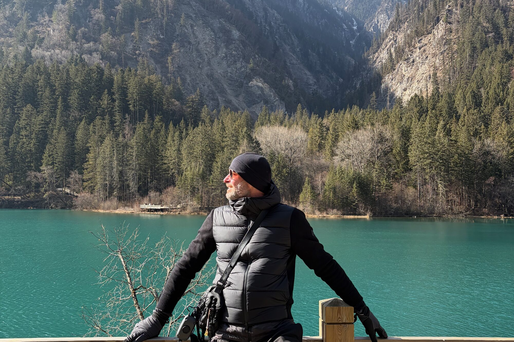

Signature · Available
Sichuan
High passes, old towns, panda country, and fire-roast tables. Private days from Chengdu into the mountains — paced for couples and curious first-timers, not a packed coach schedule.